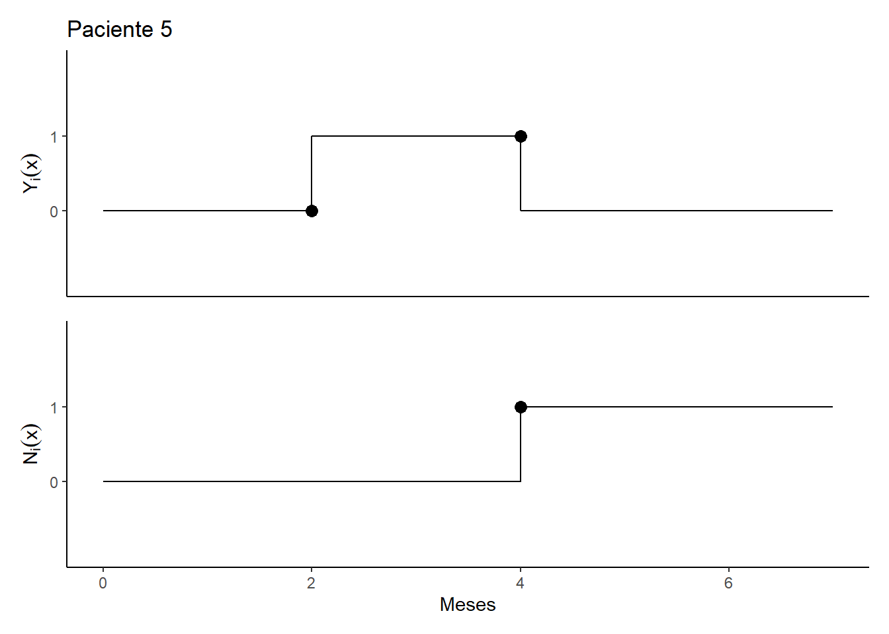

Exercício Aula 1 - Análise de Sobrevivência
Vinícius de Souza Maia
01/05/2020
# Pacotes
library(tidyverse)
library(survival)
library(patchwork)
# Definição de algumas funções que serão usadas ao longo do exercício
# Trajetória do grupo
grup_traj <- function(data, tempo = tempo, id = id) {
require(ggplot2)
require(dplyr)
data <- mutate(data, status2 = recode(status, `1` = 4, `0` = 1))
y_breaks <- length(data$id)
x_breaks <- max(data$tempo)
ggplot(data) +
geom_point(aes(tempo, id, shape = status2), size = 3) +
geom_segment(aes(x = 0, y = id, xend = tempo, yend = id)) +
scale_x_continuous(breaks = scales::extended_breaks(x_breaks),
name = "Meses") +
scale_y_continuous(breaks = scales::extended_breaks(y_breaks),
name = "Paciente") +
scale_shape_identity() +
theme(panel.grid.minor = element_blank(),
panel.grid.major = element_blank()) +
coord_cartesian(xlim = c(0.25, x_breaks + 0.5))
}
# Trajetória do indivíduo
indiv_traj <- function(data, i) {
require(ggplot2)
require(patchwork)
tmax <- max(data$tempo.fim)
t.ini <- data$tempo.ini[[i]]
t.fim <- data$tempo.fim[[i]]
censu <- data$status[[i]]
individuo_n <- tibble(
tempo2 = seq(0, tmax + 1, 1),
Yx = ifelse(tempo2 >= t.ini & tempo2 < t.fim, 1, 0),
Nx = ifelse(tempo2 >= t.fim & t.fim != tmax, 1, 0),
status = data$status[[i]])
pontos.Nx <- tibble(
x = with(individuo_n, ifelse(Nx != lag(Nx), tempo2, NA_integer_)),
y = with(individuo_n, ifelse(Nx != lag(Nx), 1, NA_integer_)),
shape = ifelse(data$status[[i]] == 0 & x == data$tempo.fim[[i]], 1, 16))
pontos.Yx <- tibble(
x = with(individuo_n, ifelse(Yx != lag(Yx), tempo2, NA_integer_)),
y = with(individuo_n, ifelse(Yx != lag(Yx), lag(Yx), NA_integer_)),
shape = ifelse(data$status[[i]] == 0 & x == data$tempo.fim[[i]], 1, 16))
g <- ggplot(individuo_n) +
geom_step(aes(tempo2, Nx), direction = "hv", na.rm = TRUE) +
geom_point(data = pontos.Nx,
aes(x, y, shape = shape),
size = 3,
na.rm = TRUE) +
scale_shape_identity() +
scale_x_continuous(breaks = seq(0, tmax, 2),
minor_breaks = NULL,
limits = c(0, tmax),
name = "Meses") +
scale_y_continuous(breaks = 0:1,
limits = c(-1, 2),
minor_breaks = NULL,
name = expression(N[i](x))) +
theme_classic() +
theme(panel.grid = element_blank())
h <- ggplot(individuo_n) +
geom_step(aes(tempo2, Yx), direction = "hv", na.rm = TRUE) +
geom_point(
data = pontos.Yx,
aes(x, y, shape = shape),
size = 3,
na.rm = TRUE) +
scale_shape_identity() +
scale_x_continuous(limits = c(0, tmax), minor_breaks = NULL) +
scale_y_continuous(
breaks = 0:1,
limits = c(-1, 2),
minor_breaks = NULL,
name = expression(Y[i](x))) +
theme_classic() +
theme(
axis.title.x = element_blank(),
axis.text.x = element_blank(),
axis.ticks.x = element_blank(),
panel.grid = element_blank()) +
ggtitle(paste0("Paciente ", i))
wrap_plots(h, g, nrow = 2)
}Exercício 2.1
O tempo de aleitamento, isto é, o tempo decorrido desde o nascimento até o desmame, pode ser considerado uma variável tempo de sobrevivência. Suponha que o tempo até o desmame em meses tenha sido registrado para 15 crianças que nasceram no mesmo dia:
6 12 10 3 5 1 6 8 1 5 2 2 5 8 1Considerando que não houve censura:
- Represente graficamente os tempos de observação
aleit <- tibble(id = 1:15,
tempo = c(6, 12, 10, 3, 5, 1, 6, 8, 1, 5, 2, 2, 5, 8, 1),
status = 1)
grup_traj(aleit)- Represente as trajetórias dos primeiros cinco indivíduos utilizando as variáveis N(t) e Y(t)
aleit_cont <- mutate(aleit,
tempo.ini = 0L,
tempo.fim = as.integer(tempo),
tempo = tempo.fim - tempo.ini,
status = 1L)
indiv_traj(aleit_cont, 1)
indiv_traj(aleit_cont, 2)
indiv_traj(aleit_cont, 3)indiv_traj(aleit_cont, 4)indiv_traj(aleit_cont, 5)
- Como você construiria um banco de dados para analisar esses dados pelo processo clássico?
aleit## # A tibble: 15 x 3
## id tempo status
## <int> <dbl> <dbl>
## 1 1 6 1
## 2 2 12 1
## 3 3 10 1
## 4 4 3 1
## 5 5 5 1
## 6 6 1 1
## 7 7 6 1
## 8 8 8 1
## 9 9 1 1
## 10 10 5 1
## 11 11 2 1
## 12 12 2 1
## 13 13 5 1
## 14 14 8 1
## 15 15 1 1- E pelo processo de contagem?
aleit_cont## # A tibble: 15 x 5
## id tempo status tempo.ini tempo.fim
## <int> <int> <int> <int> <int>
## 1 1 6 1 0 6
## 2 2 12 1 0 12
## 3 3 10 1 0 10
## 4 4 3 1 0 3
## 5 5 5 1 0 5
## 6 6 1 1 0 1
## 7 7 6 1 0 6
## 8 8 8 1 0 8
## 9 9 1 1 0 1
## 10 10 5 1 0 5
## 11 11 2 1 0 2
## 12 12 2 1 0 2
## 13 13 5 1 0 5
## 14 14 8 1 0 8
## 15 15 1 1 0 1Exercício 2.2
Considere agora o tempo de sobrevivência de 15 pacientes submetidos à hemodiálise. Neste caso, a variável de interesse é o tempo desde a primeira diálise até o óbito (em meses).
2 4 29+ 6+ 3 1 1 2 3 9+ 10 11 5+ 5 1Os tempos censurados estão indicados pelo sinal de +. Considere que todos os pacientes entraram juntos no início do estudo.
- Represente graficamente os tempos de observação dos pacientes utilizando a notação clássica.
dial <- tibble(
id = 1:15,
tempo = c(2L, 4L, 29L, 6L, 3L, 1L, 1L, 2L, 3L, 9L, 10L, 11L, 5L, 5L, 1L),
status = c(1, 1, 0, 0, 1, 1, 1, 1, 1, 0, 1, 1, 0, 1, 1))
grup_traj(dial)- Represente as trajetórias dos primeiros cinco indivíduos utilizando as variáveis N(t) e Y(t) do processo de contagem.
dial_cont <- cbind(dial, tempo.fim = dial$tempo, tempo.ini = 0)
indiv_traj(dial_cont, 1)
indiv_traj(dial_cont, 2)
indiv_traj(dial_cont, 3)
indiv_traj(dial_cont, 4)
indiv_traj(dial_cont, 5)
- Construa um banco de dados para analisar esses dados pelo processo clássico.
dial## # A tibble: 15 x 3
## id tempo status
## <int> <int> <dbl>
## 1 1 2 1
## 2 2 4 1
## 3 3 29 0
## 4 4 6 0
## 5 5 3 1
## 6 6 1 1
## 7 7 1 1
## 8 8 2 1
## 9 9 3 1
## 10 10 9 0
## 11 11 10 1
## 12 12 11 1
## 13 13 5 0
## 14 14 5 1
## 15 15 1 1- Reconstrua o banco de dados, na forma de processo de contagem, considerando que essa é uma coorte aberta e as datas de início do tempo de observação de cada paciente são dadas pela tabela abaixo.
dial_cont <- tibble(
id = 1:15,
tempo.ini = c(0, 1, 12, 3, 1, 7, 0, 1, 1, 3, 12, 4, 4, 1, 22),
tempo = c(2L, 4L, 29L, 6L, 3L, 1L, 1L, 2L, 3L, 9L, 10L, 11L, 5L, 5L, 1L),
tempo.fim = tempo + tempo.ini,
status = c(1, 1, 0, 0, 1, 1, 1, 1, 1, 0, 1, 1, 0, 1, 1)
)
dial_cont## # A tibble: 15 x 5
## id tempo.ini tempo tempo.fim status
## <int> <dbl> <int> <dbl> <dbl>
## 1 1 0 2 2 1
## 2 2 1 4 5 1
## 3 3 12 29 41 0
## 4 4 3 6 9 0
## 5 5 1 3 4 1
## 6 6 7 1 8 1
## 7 7 0 1 1 1
## 8 8 1 2 3 1
## 9 9 1 3 4 1
## 10 10 3 9 12 0
## 11 11 12 10 22 1
## 12 12 4 11 15 1
## 13 13 4 5 9 0
## 14 14 1 5 6 1
## 15 15 22 1 23 1Exercício 2.3
Em um hospital, seis pacientes HIV positivo são acompanhados ao longo de um ano. No gráfico a seguir, as linhas horizontais representam o tempo de acompanhamento de cada paciente: linhas terminadas em “X” indicam a ocorrência do desfecho (óbito), linhas terminadas em com “o” indicam censuras. Represente, utilizando as variáveis N(t) e Y(t), as trajetórias de cada um dos seis pacientes.

Gráfico
aids <- tibble(id = 1:6,
tempo = c(4, 6, 12, 3, 6, 9),
tempo.ini = c(3, 6, 0, 5, 0, 3),
tempo.fim = tempo + tempo.ini,
status = c(1, 0, 0, 0, 1, 0))
aids## # A tibble: 6 x 5
## id tempo tempo.ini tempo.fim status
## <int> <dbl> <dbl> <dbl> <dbl>
## 1 1 4 3 7 1
## 2 2 6 6 12 0
## 3 3 12 0 12 0
## 4 4 3 5 8 0
## 5 5 6 0 6 1
## 6 6 9 3 12 0# Trajetórias
indiv_traj(aids, 1)indiv_traj(aids, 2)
indiv_traj(aids, 3)
indiv_traj(aids, 4)
indiv_traj(aids, 5)
indiv_traj(aids, 6)Exercício 2.4
Considerando a trajetória observada de um paciente apresentada na figura abaixo, responda:
Gráfico
Qual foi o mês de entrada do paciente no estudo?
O paciente entrou no estudo no mês 2.
Em que mês ocorreu o desfecho?
O desfecho ocorreu no mês 4.
Em que meses o paciente esteve sob risco de óbito?
Nos meses 3 e 4.
Exercício 2.5
Outro paciente tem a seguinte trajetória de observação:

Gráfico
Com base neste gráfico, responda:
Qual foi a data de entrada do paciente no estudo?
O paciente entrou no estudo no início, ou seja, no t = 0.
Em que data ocorreu o desfecho?
O desfecho ocorreu no mês 8.
Exercício 2.6
Considere seis indivíduos em uma coorte para avaliação de fatores de risco para infecção por HIV. O estudo iniciou-se em 01/06/2008, quando dois dos indivíduos entraram no estudo, com resultados negativos para a infecção. Um deles, ao realizar o segundo exame, um mês depois, apresentou resultado positivo, e o outro, positivou dois meses depois. O outros quatro indivíduos entraram no estudo em 01/07/2008, 01/09/2008, 01/08/2008, e 01/08/2008 e suas respectivas datas de soroconversão foram 2, 3, 2 e 5 meses após a entrada.
- Construa o banco de dados no formato clássico.
(hiv <- tibble(
id = 1:6,
tempo = c(1, 3, 2, 3, 2, 5),
status = 1))## # A tibble: 6 x 3
## id tempo status
## <int> <dbl> <dbl>
## 1 1 1 1
## 2 2 3 1
## 3 3 2 1
## 4 4 3 1
## 5 5 2 1
## 6 6 5 1- Construa o banco de dados na forma de processo de contagem.
(hiv_cont <- tibble(id = 1:6,
tempo.ini = c(0, 0, 1, 3, 2, 2),
tempo = c(1, 3, 2, 3, 2, 5),
tempo.fim = tempo.ini + tempo,
status = 1))## # A tibble: 6 x 5
## id tempo.ini tempo tempo.fim status
## <int> <dbl> <dbl> <dbl> <dbl>
## 1 1 0 1 1 1
## 2 2 0 3 3 1
## 3 3 1 2 3 1
## 4 4 3 3 6 1
## 5 5 2 2 4 1
## 6 6 2 5 7 1- Represente graficamente os tempos observados desses indivíduos.
grup_traj(hiv_cont)
- Represente as trajetórias dos 6 indivíduos utilizando N(t) e Y(t).
indiv_traj(hiv_cont, 1)
indiv_traj(hiv_cont, 2)indiv_traj(hiv_cont, 3)indiv_traj(hiv_cont, 4)indiv_traj(hiv_cont, 5)
indiv_traj(hiv_cont, 6)- Quais são os indivíduos em risco no quinto mês de estudo.
filter(hiv_cont, tempo.ini < 5, tempo.fim >= 5)## # A tibble: 2 x 5
## id tempo.ini tempo tempo.fim status
## <int> <dbl> <dbl> <dbl> <dbl>
## 1 4 3 3 6 1
## 2 6 2 5 7 1Que tipo de censura ocorreu neste estudo?
Censura intervalar.
Em que situação ocorreria truncamento?
Truncamento a esquerda ocorreria no caso de pacientes positivarem no teste inicial, pois eles teriam positivado fora da janela temporal do estudo. Truncamento a direita ocorreria se o estudo analisasse apenas os casos de pacientes que positivaram durante a janela temporal.
Exercício 2.7
Para se familiarizar com o R e com o banco de dados do Ipec (ipec.csv, veja o Apêndice, seção Aids - clássico) que será utilizado nos próximos capítulos, inicie a análise de sobrevivência observando os dados dos pacientes:
- No formato clássico.
(ipec <- read_csv2("ipec.csv"))## # A tibble: 193 x 15
## id ini fim tempo status sexo escola idade risco acompan obito
## <dbl> <dbl> <dbl> <dbl> <dbl> <chr> <dbl> <dbl> <dbl> <dbl> <chr>
## 1 1 1243 2095 852 1 M 3 34 0 1 S
## 2 2 2800 2923 123 1 M 2 38 6 1 S
## 3 3 1250 2395 1145 1 M NA 32 0 1 S
## 4 4 1915 4670 2755 0 M NA 43 6 0 N
## 5 5 2653 4770 2117 0 M NA 40 0 1 N
## 6 6 3 332 329 0 M NA 34 0 1 I
## 7 7 36 96 60 1 M NA 27 0 2 S
## 8 8 1 152 151 1 M 0 22 6 2 S
## 9 9 544 2107 1563 1 M 2 44 NA 0 S
## 10 10 71 1318 1247 1 M 2 23 0 2 S
## # ... with 183 more rows, and 4 more variables: anotrat <dbl>,
## # tratam <dbl>, doenca <dbl>, propcp <dbl>with(ipec, Surv(tempo, status))## [1] 852 123 1145 2755+ 2117+ 329+ 60 151 1563 1247 84
## [12] 214 25+ 1348 158 555 408 1116 998 1125 944+ 54
## [23] 151 855 116 80+ 1757+ 194 183 37 237+ 1506 168+
## [34] 134 803+ 18 371 173 688 163 3178+ 29 50+ 887
## [45] 516 645 310 204 1344+ 1261 285 83 150 1307+ 1076+
## [56] 1226 865+ 811 2898 80 967 618 235 2236+ 152 892
## [67] 81+ 1085 1073+ 1615+ 35 290 1780+ 3228+ 52 733 3213+
## [78] 1983 2304+ 572 21 1272+ 1646+ 304 418 854 2973+ 40
## [89] 850 1139 323 1507+ 2717+ 1735+ 388+ 145 905 927 1027+
## [100] 631 2495+ 1331+ 623 2568+ 2013+ 721 1952+ 397 254 1630+
## [111] 1523+ 146+ 108 1835+ 499 333 202+ 2437+ 1015 2138+ 22
## [122] 2090+ 179 2439+ 1063+ 85+ 343+ 2215+ 259 2258+ 1371 39
## [133] 2371+ 975+ 952 2492+ 1478+ 295+ 992 1011+ 644 426 537+
## [144] 1454+ 1869+ 714+ 1310+ 2084+ 1918+ 1649+ 290+ 1685+ 1348+ 652+
## [155] 1384+ 1471+ 1512+ 378+ 1352+ 419 1426+ 1488+ 1315+ 643+ 1197+
## [166] 1343+ 1176+ 944 340 881+ 915+ 948+ 985+ 1242+ 955+ 987+
## [177] 899+ 1056+ 775 785+ 731+ 16 680+ 21+ 444+ 524+ 217+
## [188] 440+ 470+ 390+ 344+ 578+ 504+- No formato de processo de contagem.
with(ipec, Surv(ini, fim, status))## [1] (1243,2095] (2800,2923] (1250,2395] (1915,4670+] (2653,4770+]
## [6] ( 3, 332+] ( 36, 96] ( 1, 152] ( 544,2107] ( 71,1318]
## [11] ( 946,1030] ( 802,1016] ( 266, 291+] (1544,2892] ( 57, 215]
## [16] (1270,1825] (2753,3161] ( 940,2056] ( 393,1391] (1000,2125]
## [21] ( 238,1182+] ( 423, 477] ( 206, 357] ( 480,1335] ( 226, 342]
## [26] ( 249, 329+] (3052,4809+] (1802,1996] (1395,1578] ( 354, 391]
## [31] ( 493, 730+] (1113,2619] ( 638, 806+] ( 655, 789] (1189,1992+]
## [36] ( 943, 961] (1715,2086] ( 792, 965] (1037,1725] ( 820, 983]
## [41] ( 884,4062+] (2262,2291] (1121,1171+] (1131,2018] ( 878,1394]
## [46] (1316,1961] (1107,1417] (1190,1394] ( 393,1737+] (1274,2535]
## [51] (1172,1457] (2360,2443] (2074,2224] (1019,2326+] ( 605,1681+]
## [56] (1915,3141] (3948,4813+] (1314,2125] (1502,4400] (1347,1427]
## [61] (1379,2346] (2352,2970] (2625,2860] (2586,4822+] (1406,1558]
## [66] (1466,2358] (3314,3395+] (3413,4498] (3712,4785+] (3207,4822+]
## [71] (1592,1627] (1537,1827] (3018,4798+] (1555,4783+] (1541,1593]
## [76] (1589,2322] (1609,4822+] (1682,3665] (2465,4769+] (1243,1815]
## [81] (1667,1688] (1605,2877+] (3157,4803+] (2066,2370] (1929,2347]
## [86] (2216,3070] (1809,4782+] (1670,1710] (1983,2833] (2883,4022]
## [91] (1766,2089] (3313,4820+] (1977,4694+] (3087,4822+] (2286,2674+]
## [96] (1877,2022] (1852,2757] (1549,2476] (3795,4822+] (2475,3106]
## [101] (2310,4805+] (2870,4201+] (1935,2558] (2199,4767+] (2800,4813+]
## [106] (2990,3711] (2857,4809+] (3586,3983] (2143,2397] (3124,4754+]
## [111] (3276,4799+] (2208,2354+] (2209,2317] (2976,4811+] (2626,3125]
## [116] (3838,4171] (2314,2516+] (2311,4748+] (2280,3295] (2684,4822+]
## [121] (2454,2476] (2713,4803+] (2311,2490] (2370,4809+] (3756,4819+]
## [126] (2565,2650+] (2599,2942+] (2553,4768+] (2601,2860] (2553,4811+]
## [131] (2726,4097] (2739,2778] (2447,4818+] (3830,4805+] (2429,3381]
## [136] (2311,4803+] (3299,4777+] (4510,4805+] (2384,3376] (3749,4760+]
## [141] (2676,3320] (2985,3411] (4192,4729+] (3159,4613+] (2921,4790+]
## [146] (4078,4792+] (2934,4244+] (2645,4729+] (2857,4775+] (3173,4822+]
## [151] (4509,4799+] (3082,4767+] (3465,4813+] (3188,3840+] (3271,4655+]
## [156] (3276,4747+] (3287,4799+] (4439,4817+] (3446,4798+] (3305,3724]
## [161] (3391,4817+] (3307,4795+] (3425,4740+] (4117,4760+] (3612,4809+]
## [166] (3479,4822+] (3572,4748+] (3796,4740] (3527,3867] (3921,4802+]
## [171] (3798,4713+] (3808,4756+] (3772,4757+] (3557,4799+] (3867,4822+]
## [176] (3594,4581+] (3923,4822+] (3733,4789+] (4019,4794] (4033,4818+]
## [181] (4040,4771+] (4053,4069] (4137,4817+] (4208,4229+] (4362,4806+]
## [186] (4279,4803+] (4593,4810+] (4320,4760+] (4343,4813+] (4419,4809+]
## [191] (4406,4750+] (4199,4777+] (4301,4805+]- Observe a saída nos dois formatos. Quais os tempos e status do 1º e 79º pacientes em cada um dos formatos?
with(ipec, Surv(tempo, status))[c(1, 79)]## [1] 852 2304+with(ipec, Surv(ini, fim, status))[c(1, 79)]## [1] (1243,2095] (2465,4769+]No formato clássico, o primeiro paciente foi observado por período de 852
dias, ao fim do qual sofreu o desfecho. O segundo paciente foi observado por
2304 dias, ao fim do qual foi censurado.
No formato de processo de contagem, o primeiro paciente começou a ser
observado no dia 1243 e deixou de ser observado no dia 2095 em razão de ter
sofrido o desfecho. O segundo paciente começou a ser observado no dia 2465 e
deixou de ser observado no dia 4769 em razão de ter sofrido censura.Exercício 2.8
Ainda com os dados do Ipec, organize o banco de dados e faça uma análise exploratória das variáveis de interesse.
- Verifique as dimensões dos dados.
dim(ipec)## [1] 193 15- Veja quais são as variáveis que constam nos dados
names(ipec)## [1] "id" "ini" "fim" "tempo" "status" "sexo" "escola"
## [8] "idade" "risco" "acompan" "obito" "anotrat" "tratam" "doenca"
## [15] "propcp"- Substitua os dados faltantes (codificados com 9, 99 ou I) por NA (padrão do R).
ipec$anotrat[ipec$anotrat == 9] <- NA
ipec$obito[ipec$obito == "I"] <- NA- Indique ao R quais são as variáveis categóricas que estão erroneamente classificadas como numéricas pelo R (isso acontece quando números são utilizados para codificar as categorias).
ipec$escola <- factor(
ipec$escola,
labels = c("sem", "fundam", "medio", "sup")
)
ipec$risco <- factor(
ipec$risco,
labels = c("Homo", "UDI", "Transf", "Cont hetero", "Mut parc", "2 fat")
)
ipec$acompan <- factor(
ipec$acompan,
labels = c("Amb", "Int.Post", "Int.Imed")
)
ipec$anotrat <- factor(ipec$anotrat)
ipec$tratam <- factor(
ipec$tratam,
labels = c("Nenhum", "Mono", "Combinada", "Potente")
)
ipec$doenca <- factor(
ipec$doenca,
labels = c("PCP", "TB pulm", "TB diss", "Toxo", "SK",
"Outra", "Cand", "Herpes", "Duas", "Def CD4")
)
ipec$propcp <- factor(
ipec$propcp,
labels = c("Sem", "Prim", "Secund", "Ambas")
)- Calcule as medidas resumo das variáveis presentes no banco.
summary(ipec)## id ini fim tempo
## Min. : 1 Min. : 1 Min. : 96 Min. : 16.0
## 1st Qu.: 49 1st Qu.:1406 1st Qu.:2095 1st Qu.: 290.0
## Median : 97 Median :2454 Median :3711 Median : 852.0
## Mean : 97 Mean :2397 Mean :3335 Mean : 938.2
## 3rd Qu.:145 3rd Qu.:3314 3rd Qu.:4790 3rd Qu.:1348.0
## Max. :193 Max. :4593 Max. :4822 Max. :3228.0
##
## status sexo escola idade
## Min. :0.0000 Length:193 sem :59 Min. :20.00
## 1st Qu.:0.0000 Class :character fundam:44 1st Qu.:30.00
## Median :0.0000 Mode :character medio :55 Median :35.00
## Mean :0.4663 sup :24 Mean :36.55
## 3rd Qu.:1.0000 NA's :11 3rd Qu.:43.00
## Max. :1.0000 Max. :68.00
##
## risco acompan obito anotrat
## Homo :87 Amb :57 Length:193 1992 :22
## UDI : 9 Int.Post:99 Class :character 1995 :20
## Transf : 7 Int.Imed:37 Mode :character 1993 :19
## Cont hetero:30 1996 :18
## Mut parc :16 1994 :16
## 2 fat : 7 (Other):54
## NA's :37 NA's :44
## tratam doenca propcp
## Nenhum : 44 Def CD4:67 Sem : 38
## Mono :100 TB diss:31 Prim : 24
## Combinada: 35 Duas :25 Secund: 3
## Potente : 14 Outra :17 Ambas :128
## PCP :12
## Cand :12
## (Other):29- Construa tabelas de frequência para as variáveis de maior interesse.
table(ipec$status)##
## 0 1
## 103 90table(ipec$sexo)##
## F M
## 49 144table(ipec$escola)##
## sem fundam medio sup
## 59 44 55 24table(ipec$risco)##
## Homo UDI Transf Cont hetero Mut parc 2 fat
## 87 9 7 30 16 7table(ipec$acompan)##
## Amb Int.Post Int.Imed
## 57 99 37table(ipec$anotrat)##
## 1990 1991 1992 1993 1994 1995 1996 1997 1998 1999 2000
## 6 8 22 19 16 20 18 14 16 6 4table(ipec$tratam)##
## Nenhum Mono Combinada Potente
## 44 100 35 14table(ipec$doenca)##
## PCP TB pulm TB diss Toxo SK Outra Cand Herpes Duas
## 12 10 31 8 7 17 12 4 25
## Def CD4
## 67table(ipec$propcp)##
## Sem Prim Secund Ambas
## 38 24 3 128- Construa gráficos para o tempo de sobrevivência e para outras variáveis de interesse.
boxplot(
tempo ~ status,
data = ipec,
main = "Tempo por status",
ylab = "Tempo(dias)",
xlab = "Desfecho")
boxplot(
tempo ~ sexo,
data = ipec,
main = "Tempo por sexo",
ylab = "Tempo(dias)",
xlab = "Sexo")boxplot(
tempo ~ escola,
data = ipec,
main = "Tempo por escolaridade",
ylab = "Tempo(dias)",
xlab = "Escolaridade")
boxplot(
tempo ~ risco,
data = ipec,
main = "Tempo por risco",
ylab = "Tempo(dias)",
xlab = "Risco")boxplot(
tempo ~ acompan,
data = ipec,
main = "Tempo por acompanhamento",
ylab = "Tempo(dias)",
xlab = "Risco")boxplot(
tempo ~ tratam,
data = ipec,
main = "Tempo por tratamento",
ylab = "Tempo(dias)",
xlab = "Tratamento")boxplot(
tempo ~ doenca,
data = ipec,
main = "Tempo por doença",
ylab = "Tempo(dias)",
xlab = "Doença")boxplot(
tempo ~ propcp,
data = ipec,
main = "Tempo por propcp",
ylab = "Tempo(dias)",
xlab = "Propcp")hist(
ipec$tempo,
main = "Sobrevivência",
ylab = "Freqüência",
xlab = "Dias")hist(
ipec$tempo/30,
breaks = seq(0, 120, 6),
at = seq(0, 120, 12),
main = "Sobrevivência",
ylab = "Freqüência",
xlab = "Meses")## Warning in plot.window(xlim, ylim, "", ...): "at" não é um parâmetro
## gráfico## Warning in title(main = main, sub = sub, xlab = xlab, ylab = ylab, ...):
## "at" não é um parâmetro gráfico
hist(
ipec$idade,
main = "Idade",
ylab = "Frequência",
xlab = "Idade")